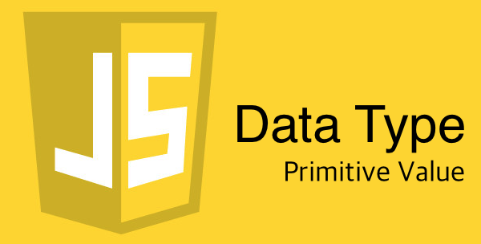

자알쓰란?
자바스크립트 알고 쓰자. (잘 쓰자는 의미도 담겨있다.)
자바스크립트라는 언어 자체는 내 기준에서는 설계 상 미스가 참 많다.
함수 단위의 스코프, 호이스팅, 동적 타입 등등
자바와 같은 깐깐(?)한 언어를 배우고 바라본 자스는 허점 투성이처럼 보였다.
애초에 자바스크립트는 어떠한 프로그램을 만들기 위해서 탄생했다기 보다는
웹 페이지에 입력값에 대한 유효성 검사(데이터가 공란인지 아닌지 등등)와 같은
페이지의 동적 제어가 주된 목적 + 짧은 개발 기간(넷 스케이프 사의 새로운 브라우저에 탑재 예정) 때문에
설계 상에 미스가 있을 수 밖에 없다고 나는 생각된다.
일종의 안전 장치가 없어서 개발자가 일일이 구현해주고, 신경써야 하는 느낌이었다.
그렇다고 해서 자바스크립트를 극혐하거나 그런 것은 아니고 매우 사랑한다.
또한 그 허점을 아는 사람은 허점을 보완해서 요리조리 피해서 잘 쓰겠지만…
잘 모르는 부분들은 잘못 써도 동작이 잘 되기 마련이다.
이는 지금 당장에는 큰 문제가 안 될지 모르겠지만, 추후에 대규모 웹 어플리케이션을 만들거나
직면할 문제로부터 미리 해방시키기 위해 처음부터 좋은 습관을 들여가는 것이 좋다고 생각한다.
그 아홉 번째 시리즈는 자료형 중에 원시값을 주제로 진행하겠다.
자료형
0과 1로 이루어진 데이터를 메모리에서 꺼내서 써야하는데 어떻게 해석할지를 결정하는 유형.
나는 위와 같이 이해하고 있는데 잘 이해가 가지 않는다면 그냥 넘어가도 무방하다.
더 딥하게 알고 싶은 사람은 정적 타입의 언어(C, Java 등등)을 공부해보자.
자바스크립트에서 자료형은 크게 두 가지로 나뉜다.
하나 하나 파헤쳐보자.
원시값(Primitive Value)
원시값에는 6가지 유형이 있다.
그리고 이 원시값에는 다음과 같은 특징이 있다.
- 불변(Immutable)하는 값이다.
- 값으로써 비교가 가능하다. (심볼을 제외하고)
- typeof 연산자를 쓰면 각자 고유한 타입을 내뱉는다. (typeof null을 제외하고)
너무나 당연한 소리를 하고 있어서 이게 무슨 특징인가 싶을 수 있다.
하지만 다음 파트인 객체를 보고 나면 생각이 달라질 것이다.
부울(Boolean)
참/거짓을 나타내는 자료형이다.
주로 조건을 명시해야하는 경우에 많이 쓴다.
형변환을 위해서는 다음과 같은 방법이 존재한다.
Falsy/Truthy Value
boolean으로 형변환 했을 때 거짓으로 판명되는 값이 Falsy Value, 참으로 판명되는 값이 Truthy Value이다.
아래의 경우를 제외하고 모두 Truthy Value이다.
자바스크립트의 유연한 동적 타입의 특성이 여기서 드러나는 것 같다.
문자열(String)
다른 프로그래밍 언어에서 문자열은 기본 자료형에 속하지 않는다.
C에서는 문자의 배열로 문자열을 다루며, 자바에서는 클래스로 다루고 있는데 자바스크립트에서는 기본 자료형에 속해있다.
C에서 문자의 배열이라고 말하듯이 자바스크립트에서도 배열과 같이 사용이 가능하다.
형변환은 다음과 같이 할 수 있다.
Null
값이 없음을 나타내기 위한 자료형이다.
어떤 사람은 이 null을 할당해주는 작업이 해당 변수를 쓸 준비가 되었다는 것과 같다고 한다.
또한 null은 어떠한 프로퍼티나 메소드의 사용도 불가능하다.
Undefined
값이 정의되지 않음을 나타내기 위한 자료형이다.
null은 값이 정의 됐다, 변수에 할당된 상태이나 undefined는 값이 할당되지 않은 상태이다.
undefined도 null과 마찬가지로 어떠한 프로퍼티나 메소드의 사용도 불가능하다.
분량이 길어졌으니 한 번 끊고 그 다음 자료형인 객체에 대해서 공부해보자.